CyberSci Hardware Challenge
A copy of this writeup is written in the UNBCTF's writeups repository.
Difficulty: Medium/Hard
The objective of the challenge is to dump the firmware from the provided hardware badge and reverse engineer it. In theory this is quite easy, however it took quite some time to get familiar with the AVR architecture and instruction set.
Hints: If you're just starting out, ask Jeff Bezos for help. If you're near the end, ask Jeff Bezos for help.
Attachments: flash.hex, sram.hex, eeprom.hex
(these attachments were not provided, and had to be recovered as part of the challenge)
Solution: asd.py
The Badge

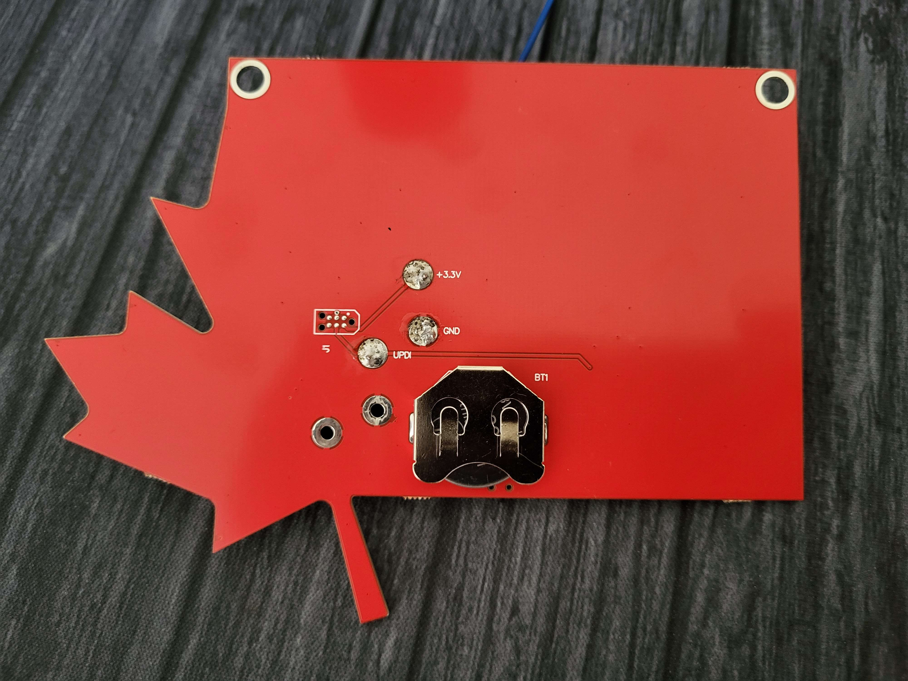
(ignore the soldering, that will come later)Upon inital inspection we can see the board has been nicely labelled for us. There is also a small push button, a power switch, some LED's/resistors, and an IC chip present.
When powered on, the badge will cycle through different light patterns each time the small push button is pressed.
The lights didn't seem to provide a pattern - that would be too easy. So we know the challenge must be hidden in the firmware.
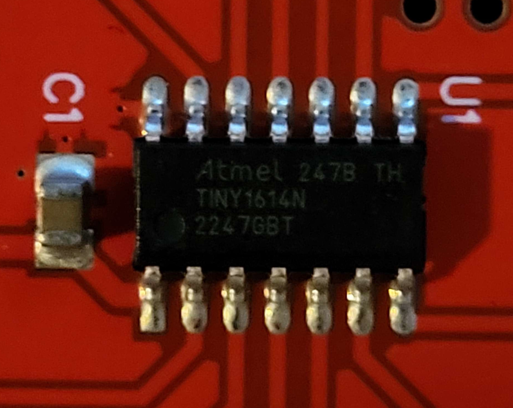
The chip has some small writing on the casing, and we can make out "TINY1614N". Googling around for it quickly reveals the documentation (hosted on AWS, hence the hint), which explains that we can interact with it via the UPDI (Unified Program and Debug Interface).
Dumping the firmware
What's UPDI?
Taken straight from the documentation: UPDI is a Microchip TM (formerly Atmel) proprietary interface for external programming and on-chip debugging of a device.
It operates over a one-wire interface, so other than hooking up GND and VCC (the power supply), there is minimal setup required.
Interfacing with the badge
Luckily, the challenge creator (Loudmouth Security) graciously connected the UPDI pinout into the single wire interface for us, so other than connecting GND and VCC we don't have to do much more for setup.
After conducting some research, tools such as avr-dude and updiprog quickly became of interest as they seemed to be capable of dumping the firmware.
First Attempt
Originally, it was thought that an Arduino Uno (or alike) could be converted into a USB to TTL (aka serial) adapter to enable communication with the chip.
After reading several guides of people looking to program various chips via UPDI, the following schematic seemed to be accurate.
VCC (3.3v) VCC
+-----------------------+
| |
+---------------------+ | | +--------------------+
| Serial Adapter +-+ Resistor +-+ AVR device |
| | +----------+ | |
| TX +------+ 1k OHM +---------+ UPDI |
| | +----------+ | | |
| | | | |
| RX +----------------------+ | |
| | | |
| +--+ +--+ |
+---------------------+ | | +--------------------+
+---------------------+
GND GND
However, communication using an Arduino was unsuccessful for various reasons.
Rather than wasting time trying to mimic the required chipset, this adapter was purchased off Amazon for around $20 CAD. Yet another reference to asking Jeff Bezos for help.
Any USB to TTL UART adapter may be equally likely to work, we simply used the adapter linked above. A search for "USB to TTL UART" on Amazon returns plenty of valid results.
Second Attempt: Success!
After an agonizing couple days wait (we were excited!), the adapter arrived and necessary drivers were installed. There were issues with avr-dude and updiprog, so a switch to pymcuprog was made.
We setup the same circuit as above on a breadboard, and are now ready to try dumping the firmware.
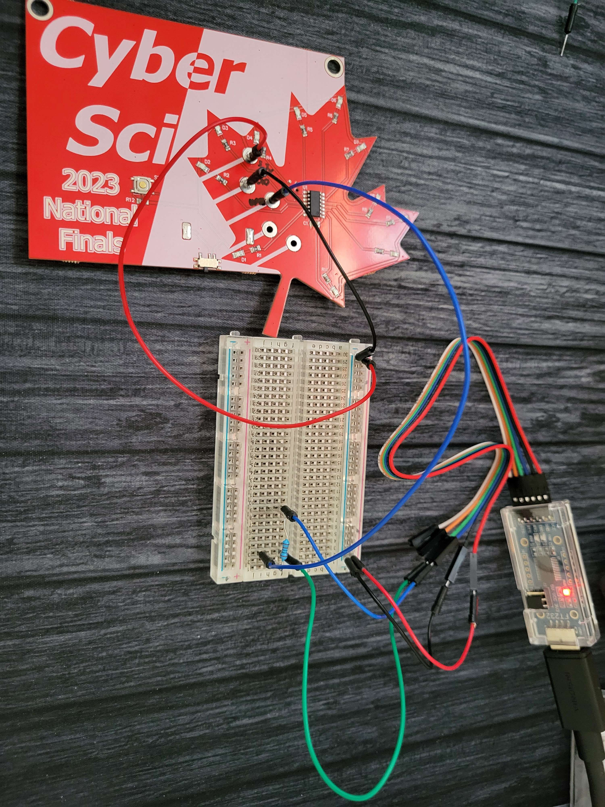
To test the connection, UPDI offers "ping" like functionality.
Note: pymcuprog is the recommend tool to use as many others are outdated and slow.
pymcuprog ping -d attiny1614 -t uart -u COM6
Connecting to SerialUPDI
Pinging device...
Ping response: 1E9422
Done.
We want to dump both the firmware (the code), the EEPROM, and the SRAM (memory), as there may be valuable information in each.
Both of us were on opposite sides of Canada as we solved this. One of us (Stephen) had access to an Arduino kit with plenty of resistors. Matt, on the other hand, resorted to.. other measures.
The PCB from an old mini fridge had to be sacrificed to use a specific resistor, and made quite the interesting setup. But it worked!
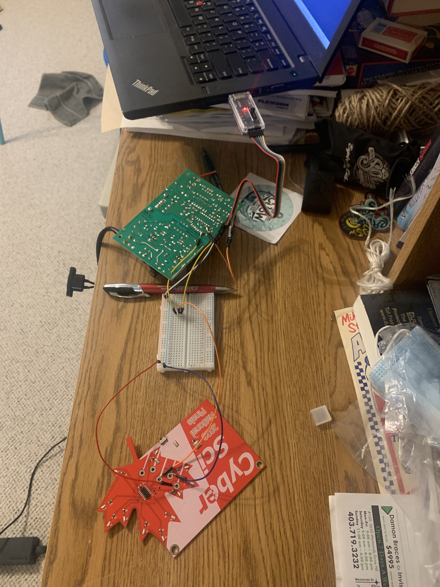
Reversing the firmware
Before we can try reversing, we need to convert the files from intel hex into a binary format.
This can be done with the following tool:
As mandated by CTF lore, strings was ran first and the following was spit out:
$ strings flash.bin
...
0123456789abcdef
JIGGYCIPHER{
JIGGYCIPHER{a1557d3801d7723f3d385111d85cd125625cc260ba76d3051a5de6ff24786b8fc70c1659aa4c41b9151c8eef70d438515a6642562ab9f0403f276ba556a7429829433d2572484f2585719d468964832ab1a258521f568165c3ab1bead146ecd2de65a5d812b53ca5c168473bac895d4a8bc37390f860b11e6a6eb442c249180a9c337285455ab098d47b7264ec42bed7688d59dcdfddcf3d0de674356cbee22547e087c63be52013dc319600c4a4859788ab87349c6c81ea9598127f87093c148c1d3e94edea50132f324eaf5cc88b63b8fac20cf6}
Hurrah! We got our flag! Should be some simple cipher now and we'll be done.. right? Unfortunately, no. Little did we know, we had only solved the easy part.
SRAM and EEPROM were also quickly looked at in a hex editor. SRAM contained content but it was mostly binary, no text. EEPROM was quickly ruled out of having anything important as it was mostly 1s.
$ xxd sram.bin
00000000: b98f ca8f d78f 0100 0054 6f57 de1f 93ff .........ToW....
00000010: e0fe 2ede feb2 3f7b ad7f 73d3 df15 3eff ......?{..s...>.
00000020: 7e2f b78b cf8a 4cde 57ae fbaa e267 bffd ~/....L.W....g..
...
$ xxd eeprom.bin
00000000: 0081 ffff ffff ffff ffff ffff ffff ffff ................
00000010: ffff ffff ffff ffff ffff ffff ffff ffff ................
00000020: ffff ffff ffff ffff ffff ffff ffff ffff ................
00000030: ffff ffff ffff ffff ffff ffff ffff ffff ................
...
This has evolved into a Reversing/Crypto Challenge...
Any attempt to try and decode this using known ciphers fails, and performing frequency analysis yields no promising results.
Maybe there is some sort of encryption routine in the firmware!
Ghidra to the rescue?
Ghidra does support the AVR architecture, however there is no direct support for the ATTINY1614 CPU.
After reading the documentation, we found that the language was AVR8:Little Endian:16 Bit and it was compiled with GCC (uses avr-libc).
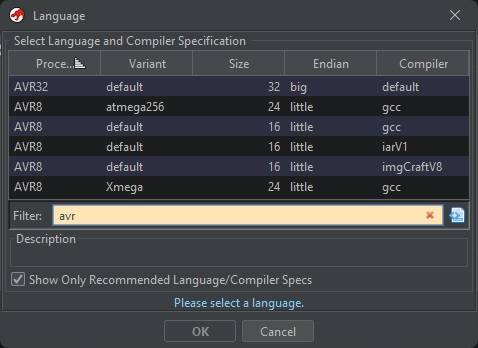
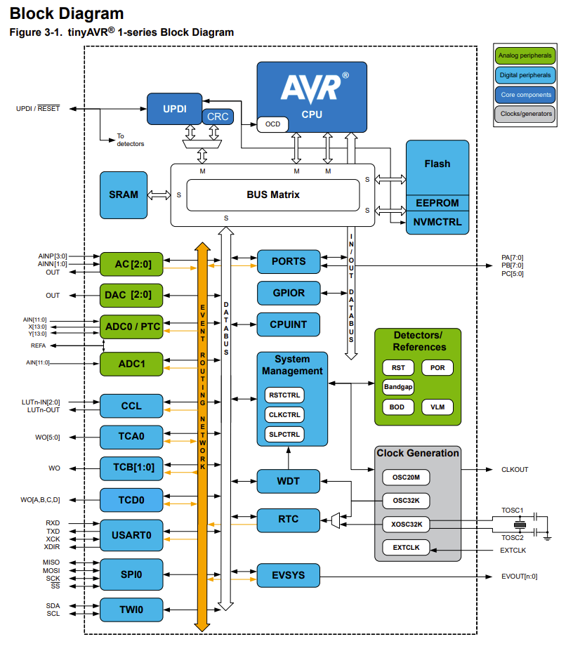
The SRAM and EEPROM dumps were added into the analysis of the flash in Ghidra via File > Import File. Using Options..., we could specify the address of the imported file, and input the real addresses of the dumps:
* EEPROM: 0x1400 - 0x14FF
* SRAM: 0x3800 - 0x3FFF
* Flash: 0x8000 - ...
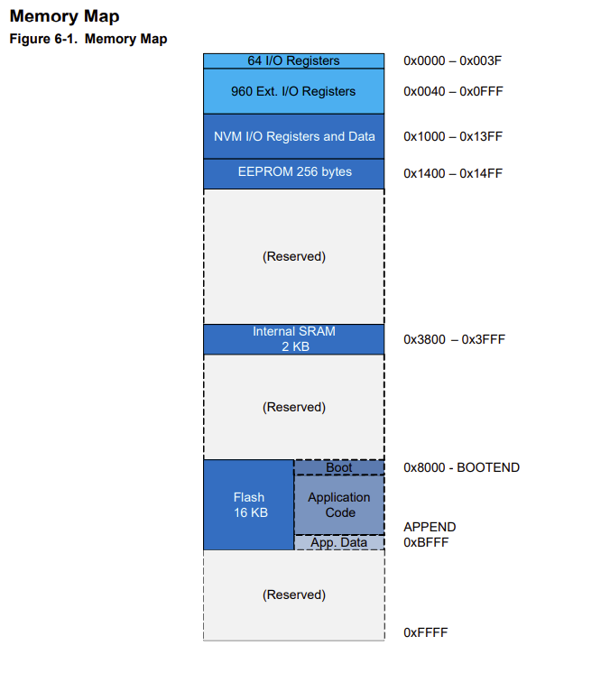
After importing the SRAM and EEPROM dumps and adjusting the memory mapping, the disassembly was still very hard to read. Ghidra's decompiler couldn't handle AVR, and after some time, we noticed some of the instructions were simply wrong (see below: Radare2 on top vs. Ghidra on bottom). Purely static analysis was also difficult, as we had no way to simulate the code. Ghidra has no emulator for AVR.
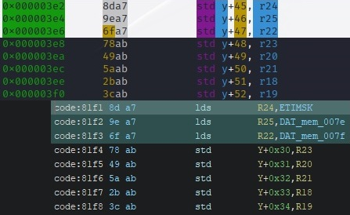
Static Analysis? Nah. Let's Emulate it!
There are few ways emulation can be done, however, Cutter was used as it was super user-friendly and only required a simple installation.
simavr was another tool we tried, but it requires you to build/define custom core for emulation. We tried, at first, but Cutter seemed much simpler so we pivoted.
The First Clue: References to JIGGYCIPHER
Despite its flaws, Ghidra did have some nice features that Cutter lacked, and it provided us with our first clue.
When looking at references to the SRAM in Ghidra, we can see a lot of references to the first eight bytes:
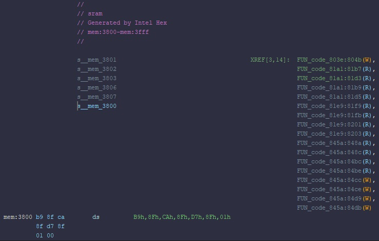
It took us a while to realize, but the contents of the SRAM at x3800, x3802, and x3804 were addresses to the strings we saw before in little-endian format:
x3800:8fb9x3802:8fcax3804:8fd7
Cutter mounts the flash at x0000 instead of x8000, so we need to subtract x8000 from each of these addresses in order to view the correct location. But when we do, we can see:
0x0fb9:0123456789abcdef0x0fca:JIGGYCIPHER{0x0fd7:JIGGYCIPHER{...}
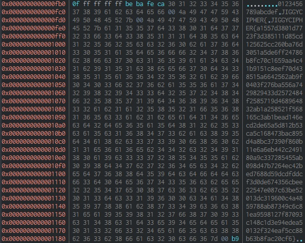
Why did we have to look up the strings in Cutter? Ghidra's addresses seemed mismatched from Cutter's, but Cutter's made more sense given the context.
Changing the data types to pointers allows us to see references to each individual string. By investigating each reference to the strings, we see a reference to JIGGYCIPHER{ (0x3802) from FUN_code_81e9.
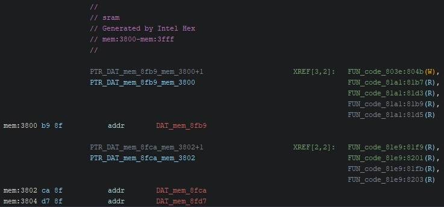
Then, using the instructions, we can search for the function in Cutter. It turns out the function is at 0x03d2, but it is not defined as a function. Oh well, we can define it ourselves. Let's name it refs_jiggy as it references JIGGYCIPHER{.
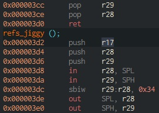
By switching to graph view, we can get a general idea of the function's working. We can see there is some init phase, followed by loop 1, then loop 2, and finally the end of the function. Let's start analyzing what this function does.
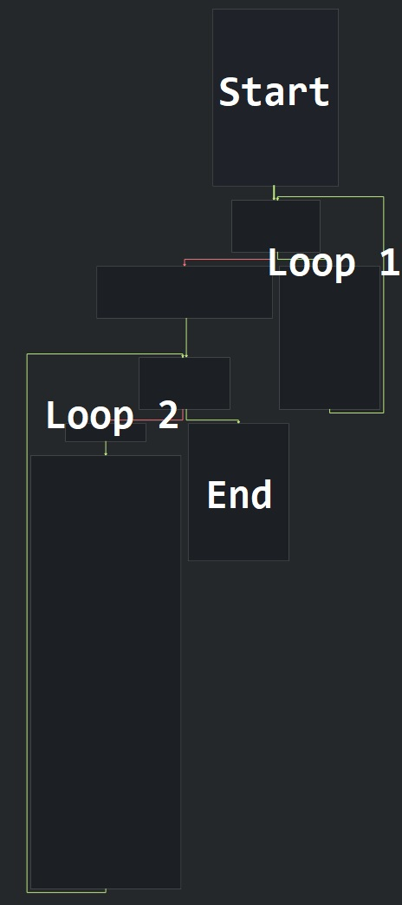
RefsJiggy Analysis
Start
Let's start by analyzing the first block. We start by breaking it up into it's pieces.
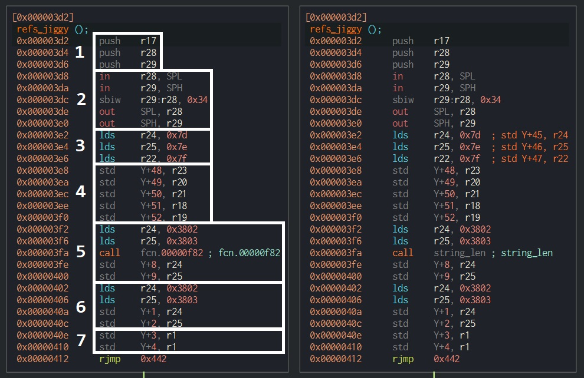
- This block starts by preserving some registers on the stack.
- Allocates 0x34 (52) places on the stack.
- Loading something from data space addresses
0x7d,0x7e,0x7f?? It turns out these instructions were incorrectly decompiled by Cutter (and Ghidra). The correct instructions have been commented in the version on the right. -
Storing some registers in the stack. These are likely input parameters for the function, There are eight input registers, but AVR uses register pairs for two-byte words. So there are likely four input parameters. We will start a table, and update it as we move along and uncover some of their purposes.
Parameter Name Input Registers Stack Location unknown r25:r24Y+46,Y+45unknown r23:r22Y+48,Y+47unknown r21:r20Y+50,Y+49unknown r19:r18Y+52,Y+51 -
Loads the pointer from address
0x3802intor25:r24. We know the pointer at address0x3802is0x0fca, which points toJIGGYCIPHER{. Then this part calls some function at0x0f82, which after some quick analysis seems to be a string length function. Then some registers are stored on the stack, probably the return values fromstring_len.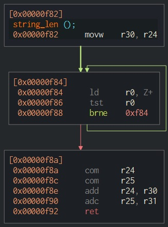
-
The pointer at address
0x3802is loaded intor25:r24again, and is also stored on the stack. -
r1is stored intoY+3andY+4on the stack? Turns out,r1is used in this compilation as zero many times. So this part is simply setting those places on the stack to zero.
So far, it seems like the start phase stores some input parameters onto the stack and gets the length of the JIGGYCIPHER{ string.
Loop 1
Now moving onto Loop 1.
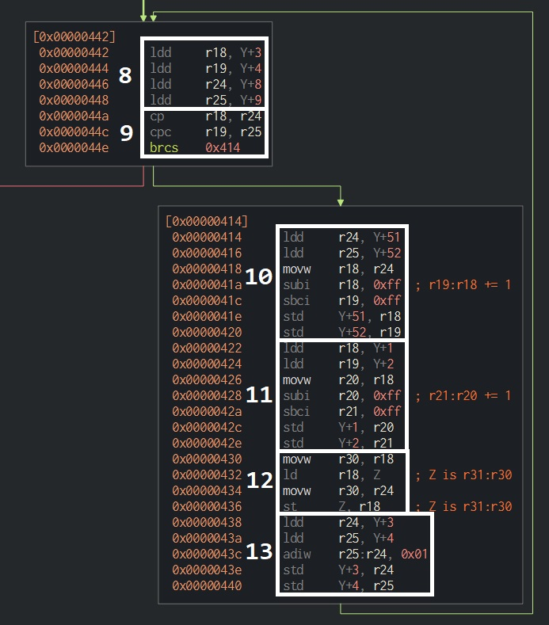
-
Loads some values from the stack. Referencing the start phase, we can tell
Y+9,Y+8is the length of theJIGGYCIPHER{string. AlsoY+4,Y+3starts as zero, and is probably the incremented variable (i) of this loop. -
Compares
iagainststring_len('JIGGYCIPHER{'). Ifiis less than the string length, it continues the loop. -
Loads some value from
Y+52,Y+51, increments by one, and saves back on the stack. The value (before being incremented) is stored inr25:r24. -
Loads some value from
Y+2,Y+1, increments by one, and saves back on the stack. The value (before being incremented) is stored inr19:r18. -
Loads a byte from the address stored in
r19:r18into registerr18. Then it saves the byte inr18into the address stored inr25:r24. This is effectively copying a byte from the address inr19:r18to the address inr25:r24. -
Increments
iby one and return to step 8.
So it seems Loop 1 is copying the JIGGYCIPHER{ string to some target address stored in Y+52,Y+51. It is important to note that Loop 1 is copying the prefix of JIGGYCIPHER, not the full flag-like string we saw before. As its copying the prefix, we can assume this is a function generating the flag-like string.
We know the generated string is being stored in the address in Y+52,Y+51 which was one of our input parameters. Let's rename the entry in our parameter table to output_string.
| Parameter Name | Input Registers | Stack Location |
|---|---|---|
| unknown | r25:r24 |
Y+46,Y+45 |
| unknown | r23:r22 |
Y+48,Y+47 |
| unknown | r21:r20 |
Y+50,Y+49 |
output_string |
r19:r18 |
Y+52,Y+51 |
Loop 2
Moving onto Loop 2.
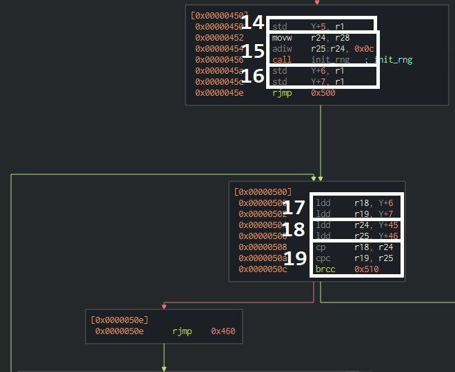
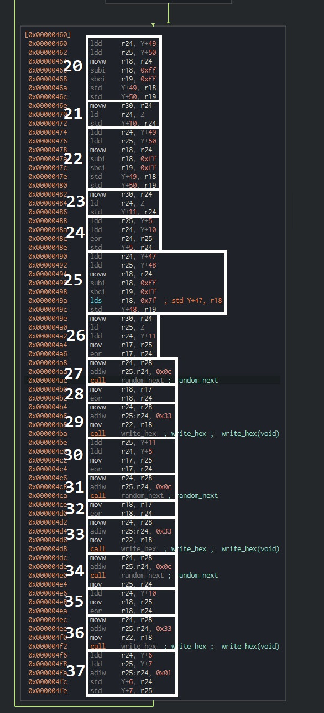
-
Set
Y+5stack value to zero. -
This step puts the address
Y+0x0cintor25:r24. This address is then passed to theinit_rngfunction. Refer to theinit_rngsection to see how we reversed this function.Basically,
init_rngtakes an input address and copies the bytes02050DFFFF0000AD8B0000050B0BFFFF00000DF000000E0D0FCAFFFFFFFFBEBAFECAto the address. These bytes act as the initial state (or seed) of therandom_nextfunction we will see later.Knowing now how this
init_rngfunction works, we can see this step is copying the RNG's seed into the stack for later usage. -
Set
Y+7,Y+6stack values to zero. -
Loads
Y+7,Y+6from the stack. From step 16, we can seeY+7,Y+6start as zero, so this is probably the increment valueiin this loop. -
Loads
Y+46,Y+45from the stack. From our input parameters, we can tellY+46,Y+45is an input parameter. So it must be some sort of count or length. Let's call itlength.Parameter Name Input Registers Stack Location lengthr25:r24Y+46,Y+45unknown r23:r22Y+48,Y+47unknown r21:r20Y+50,Y+49output_stringr19:r18Y+52,Y+51 -
Compares
iagainstlength. Ifiis less thanlength, it continues the loop. -
Loads some value from
Y+50,Y+49, increments by one, and saves back on the stack. The value (before being incremented) is stored inr25:r24. -
Loads a byte from the address stored in
r25:r24into registerr24and then saves it on the stack atY+10. -
Loads some value from
Y+50,Y+49, increments by one, and saves back on the stack. The value (before being incremented) is stored inr25:r24. -
Loads a byte from the address stored in
r25:r24into registerr24and then saves it on the stack atY+11.Notice that steps 20 and 21 or nearly identical to 22 and 23? The only difference is bytes being saved to
Y+10versusY+11. This collection of steps seems to be reading some characters from the string who's address is stored inY+50,Y+49. This is also an input parameter, so let's call itinput_string.Parameter Name Input Registers Stack Location lengthr25:r24Y+46,Y+45unknown r23:r22Y+48,Y+47input_stringr21:r20Y+50,Y+49output_stringr19:r18Y+52,Y+51 -
Loads the values at
Y+5andY+10from the stack and XORs them. The result is stored on the stack atY+5.Y+5was set to zero in step 14. -
Loads some value from
Y+48,Y+47, increments by one, and saves back on the stack. The value (before being incremented) is stored inr25:r24. -
Loads a byte from the address stored in
r25:r24into registerr25. The byte atY+11is then loaded. These two bytes are then XORed together and the result is stored inr17.The first byte is loaded from
Y+48,Y+47, much like bytes were loaded in the previous steps.Y+48,Y+47is a input parameter, and seems to be another input string, so we will call itinput_string_2.Parameter Name Input Registers Stack Location lengthr25:r24Y+46,Y+45input_string_2r23:r22Y+48,Y+47input_stringr21:r20Y+50,Y+49output_stringr19:r18Y+52,Y+51 -
A function, which we renamed to
random_next, is called with an input parameter of the addressY+0x0c. Recall that in step 15, a string of bytes were loaded into this address. Refer to therandom_nextsection to see how we reversed this function.Basically,
random_nextgenerates a random byte and stores it inr24. This random byte is dependent on its state, which is stored on the stack atY+0x0c. The initial seed of this random number generator was loaded in step 15.Knowing now how this
random_nextfunction works, we can see this step is generating a random byte and storing it inr24. -
The random byte and
r17are XORed and the result is stored inr18. Recall thatr17was set in step 26. -
A function is called with an input parameter of the address
Y+0x33(Y+51in decimal), which contains the address for our output string. Refer to thewrite_hexsection to see how we reversed this function.Basically,
write_hexreceives an input byte in the registerr22, converts it to its two hex characters, and writes these characters to the string's address stored inr25:r24.Knowing how
write_hexworks, we can see it is writing the byte stored inr18to theoutput_string. This byte's value was determined in the previous step. -
Loads
Y+11andY+5from the stack. These values are then XORed and the result is stored inr17. -
random_nextis called and the random byte is stored inr24. -
The random byte in
r24(from step 31) and the byte inr17(step 30) are XORed and the result is stored inr18. -
write_hexis called and the byte stored inr18is written the theoutput_string. -
random_nextis called and the random byte is stored inr24. -
Loads a byte
Y+10from the stack intor24. Recall this byte was last written to in step 21, and is a character frominput_string. This byte is then XORed againstr24(the random byte from step 34) and the result is stored inr18. -
write_hexis called and the byte stored inr18is written the theoutput_string. -
Increments
iby one and return to step 17.
A lot happened in this loop. Let's recap:
- Two characters were read from
input_string. - One character was read from
input_string_2. write_hexwas called three times, outputting three bytes (six characters) tooutput_string.- Each byte that was written was encrypted in a different way, through a series of XORs against other bytes and random bytes.
End
-
Loads the
output_stringaddress from the stack, increments it by one, and stores it on the stack. The address before being incremented is stored inr25:r24. -
A byte with value
0x7dis written theoutput_stringaddress from step 38. A quick ASCII table lookup shows this byte is the}character, the end of the JIGGYCIPHER. -
Loads the
output_stringaddress from the stack and storesr1's value into it.r1is always zero, and so this step is putting the null-terminator onto theoutput_string. -
Restores the stack and pushed registers before returning from the function.
So the end of this function adds the } character and a null-terminator to the end of the string, then returns.
Other Functions Analysis
These functions are planned to be explained, but for now we have omitted writing their analysis so we can share this writeup sooner rather than later.
init_rng
random_next
write_hex
Solution
If you don't want to read the full solution, feel free to spoil yourself: asd.py
Working our way bottom-up, we need to first mimic the random number generator so we can generate the same random numbers that were used to encrypt the plaintext.
# Build our RNG storage from the bytes recovered from the flash.
def build_triplets():
triplets = []
triplets_bytes = bytes.fromhex("02 05 0D FF FF 00 00 AD 8B 00 00 05 0B 0B FF FF 00 00 0D F0 00 00 0E 0D 0F FF FF FF FF BE BA FE CA")
for i in range(3):
triplet_bytes = triplets_bytes[i*11:i*11+11]
shifts = [triplet_bytes[0], triplet_bytes[1], triplet_bytes[2]]
mask = triplet_bytes[3] + (triplet_bytes[4] << 8) + (triplet_bytes[5] << 16) + (triplet_bytes[6] << 24)
gen = triplet_bytes[7] + (triplet_bytes[8] << 8) + (triplet_bytes[9] << 16) + (triplet_bytes[10] << 24)
triplets.append([shifts, mask, gen])
return triplets
# Get the next bit for a given triplet
def triplet_bit(triplet):
shifts, mask, gen = triplet
# shifts = Z0-2
# mask = Z3-6
# gen = Z7-10
next_gen = gen
shift = shifts[2]
next_gen = ((next_gen >> shift) ^ next_gen) & mask
shift = shifts[0]
next_gen = ((next_gen >> shift) ^ next_gen) & mask
shift = shifts[1]
next_gen = ((next_gen << shift) ^ next_gen) & mask
triplet[2] = next_gen
return next_gen & 1
# Get the next bit for the three triplets
def next_bit(triplets):
a = triplet_bit(triplets[2])
b = triplet_bit(triplets[1])
c = triplet_bit(triplets[0])
# something_something
s = (a & b) | (b & c) | (a & c)
return s
# Get the next byte for the three triplets
def next_byte(triplets):
s = 0
for i in range(8):
s = s << 1
s = s | next_bit(triplets)
return s
Then we can incorporate the cipher recovered from the flash, and use its length to generate all the RNG's numbers we will need.
# Set enc to integer values of the bytes in the cipher
enc = "JIGGYCIPHER{a1557d3801d7723f3d385111d85cd125625cc260ba76d3051a5de6ff24786b8fc70c1659aa4c41b9151c8eef70d438515a6642562ab9f0403f276ba556a7429829433d2572484f2585719d468964832ab1a258521f568165c3ab1bead146ecd2de65a5d812b53ca5c168473bac895d4a8bc37390f860b11e6a6eb442c249180a9c337285455ab098d47b7264ec42bed7688d59dcdfddcf3d0de674356cbee22547e087c63be52013dc319600c4a4859788ab87349c6c81ea9598127f87093c148c1d3e94edea50132f324eaf5cc88b63b8fac20cf6}"
enc = bytes.fromhex(enc[12:-1])
enc = list(enc)
## print(enc)
## [161, 85, 125, 56, ... ]
# Build the triplets (the seed) of the RNG
triplets = build_triplets()
# Generate the RNG nums, one for each encrypted byte
rng_nums = [next_byte(triplets) for i in range(len(enc))]
## print(rng_nums)
## [128, 81, 12, 36, ... ]
## These numbers were compared to the output in the emulator to ensure accuracy.
Each iteration of loop 2 in RefsJiggy appended three bytes and each of the three bytes were generated a different way. Therefore, we will need to recover each of these bytes differently. Let's start by separating each of the three bytes from enc, and their respective random numbers as well.
enc_1 = [byte for index, byte in enumerate(enc) if index % 3 == 0] # [161, 56, ...]
enc_2 = [byte for index, byte in enumerate(enc) if index % 3 == 1] # [85, ... ]
enc_3 = [byte for index, byte in enumerate(enc) if index % 3 == 2] # [125, ... ]
rng_nums_1 = [byte for index, byte in enumerate(rng_nums) if index % 3 == 0] # [128, 36, ... ]
rng_nums_2 = [byte for index, byte in enumerate(rng_nums) if index % 3 == 1] # [ 81, ... ]
rng_nums_3 = [byte for index, byte in enumerate(rng_nums) if index % 3 == 2] # [ 12, ... ]
Referring back to our reversing in Loop 2, we can deduce:
*(Y+5) = *(Y+5) ^ *(Y+10)
enc_1_byte = **(Y+48,Y+47) ^ *(Y+11) ^ random_next()
enc_2_byte = *(Y+11) ^ *(Y+5) ^ random_next()
enc_3_byte = *(Y+10) ^ random_next()
The three plaintext characters we are attempting to recover are stored in *(Y+10), *(Y+11), and **(Y+48,Y+47).
*(Y+5) is dependent on the values of *(Y+10) from the previous loops, and starts with a value of 0.
Reversing these formulas, we can get:
*(Y+10) = enc_3_byte ^ random_next()
*(Y+11) = enc_2_byte ^ *(Y+5) ^ random_next()
**(Y+48,47) = enc_1_byte ^ *(Y+11) ^ random_next()
So let's turn this pseudo-code into real Python code and get that plaintext!
*(Y+10) is a simple XOR against the random number, so we start with that:
# Recover characters from enc_3
# *(Y+10) = enc_3_byte ^ random_next()
dec_3 = []
for i in range(len(enc_3)):
d = enc_3[i] ^ rng_nums_3[i]
dec_3.append(d)
print("".join([chr(x) for x in dec_3]))
# qo:Gvrmnso h nutilWrd o er inso ls n te,Icm rmCbrpc,tenwhm fM~jb;hl{~ne
ASCII text! At this point I nearly had a heartattack. Over a week's effort had finally resulted in something readable.
Let's keep going.
Now that we have the values of *(Y+10), we can generate the iterative *(Y+5). With *(Y+5), we can recover *(Y+11):
# Recover characters from enc_2
# *(Y+5) = *(Y+5) ^ *(Y+10)
# *(Y+11) = enc_2_byte ^ *(Y+5) ^ random_next()
dec_2 = []
key = 0
for i in range(len(enc_2)):
key ^= dec_3[i]
d = enc_2[i] ^ key ^ rng_nums_2[i]
dec_2.append(d)
print("".join([chr(x) for x in dec_2]))
# ut{oenet fteIdsra ol,yuwaygat ffehadsel oefo yesae h e oeo i~p}ca:~edr
More ASCII text! You can infact put the above two together to recover input_string, but lets finish this out before doing that. Now with *(Y+11), we can recover **(Y+48,Y+47):
# Recover characters from enc_1
# **(Y+48,47) = enc_1_byte ^ *(Y+11) ^ random_next()
dec_1 = []
for i in range(len(enc_1)):
d = enc_1[i] ^ dec_2[i] ^ rng_nums_1[i]
dec_1.append(d)
print("".join([chr(x) for x in dec_1]))
# This is an Amazon(.ca?) gift card. Your claim code is ZBUH-3PYCC6-DKAG.
Well, there's input_string_2. Don't bother trying the code, we already did :)
Let's get the first input_string and wrap it all up in a nice bow now.
# Put together strings
input_string_1 = "".join([chr(x) + chr(y) for x,y in zip(dec_3, dec_2)])
input_string_2 = "".join([chr(x) for x in dec_1])
print(input_string_1)
print(input_string_2)
quot:{Governments of the Industrial World, you weary giants of flesh and steel, I come from Cyberspace, the new home of Mi~~jpb};chal:{~~ender
This is an Amazon(.ca?) gift card. Your claim code is ZBUH-3PYCC6-DKAG.
The quote above is a bit mangled, but here it is in full:
Governments of the Industrial World, you weary giants of flesh and steel, I come from Cyberspace, the new home of Mind. On behalf of the future, I ask you of the past to leave us alone. You are not welcome among us. You have no sovereignty where we gather
— John Perry Barlow, "A Declaration of the Independence of Cyberspace"
Final Remarks
A big thanks to Loudmouth Security for providing the badges and this challenge. Another big thanks to CyberSci for this year's competition.
This challenge was a rollercoaster, and don't let the presentation of this writeup fool you, finding the solution was in no way a linear, clearly-defined journey. The road to solving this was bumpy, but both of us learned a lot about hardware, reversing, and maybe a bit too much about AVR in the process.
All in all, it was a lot of fun and hopefully a similar challenge will be seen next year.